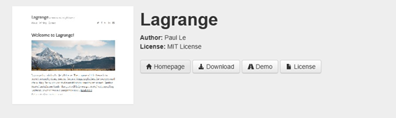
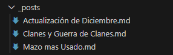
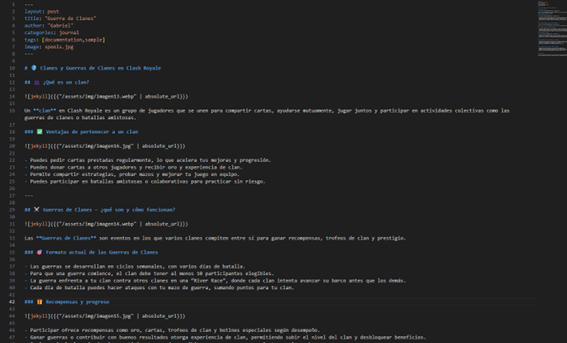
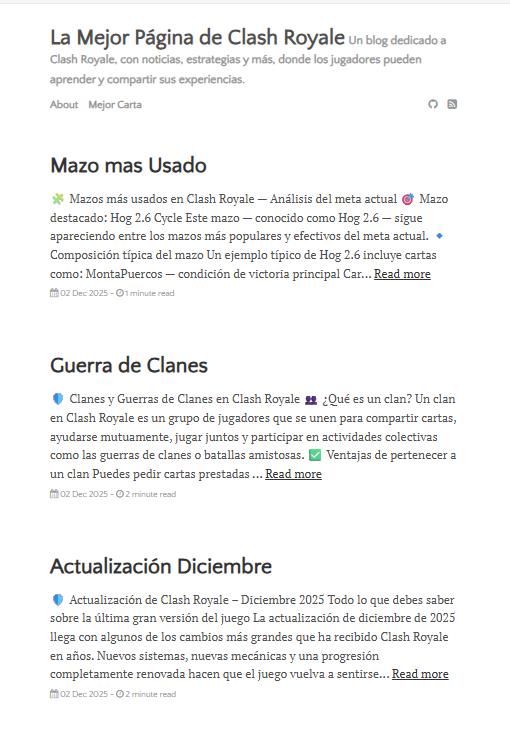

Importar, desplegar y configurar el tema "LAGRANGE" en GitHub Pages
Paso 1

Para empezar tenemos que acceder al repositorio del tema Lagrange, usamos el enlace de Luis para llegar a alli y acceder

Una vez dentro del GitHub, usaremos el método "Forking" y pulsaremos en el Fork para tener el tema Lagrange en nuestro GitHub

Después solo tendremos que hacer el git pull para bajarnos el tema
Paso 2

Ahora comenzamos a configurar el tema, para ello empezamos creando una página nueva dentro de "menu", ahora tenemos el about.md y la página creada en mi caso, MejorCarta.md

Aqui podemos ver un poco la estructura de la página de MejorCarta.md

Y aqui podemos ver un poco la estructura de la página de about.md
Paso 3

Después de las páginas debemos de crear y modificar tres nuevos post

El primer post en mi caso sera sobre la reciente actualizacion de diciembre de Clash Royale, una de las actualizaciones más grandes hasta la fecha, en este post destaco todo sobre esta.

El segundo sera acerca del sistema de Clanes y Guerras de Clanes, un sistema parecido al de otros juegos de Supercell, hablaré de las recompensas, donaciones, puntos, etc.

Y el último será sobre el mazo más usado de Clash Royale, destacaré las ventajas, desventajas y el funcionamiento de este, aclarando por que es el mejor mazo según la Comunidad
Comprobación

Para terminar, comprobamos que se haya subido todo correctamente, después de hacer algunas configuraciones en "settings.yml" sobre el menu e iconos de redes sociales